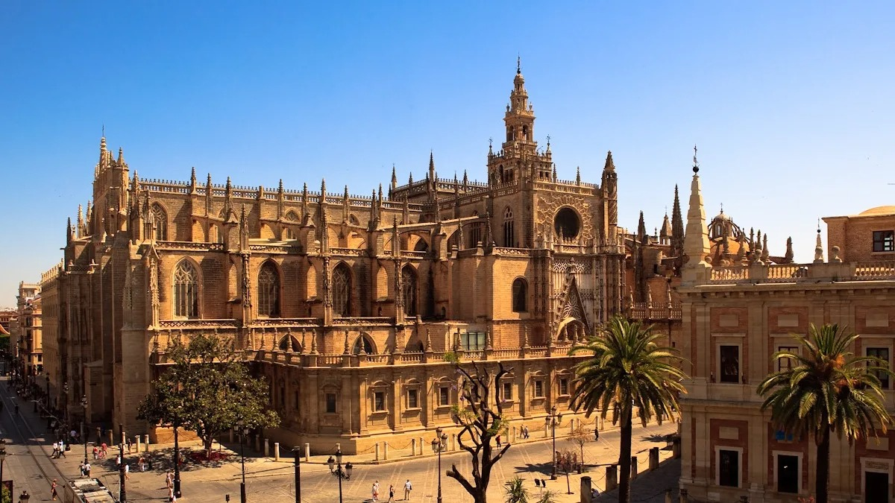
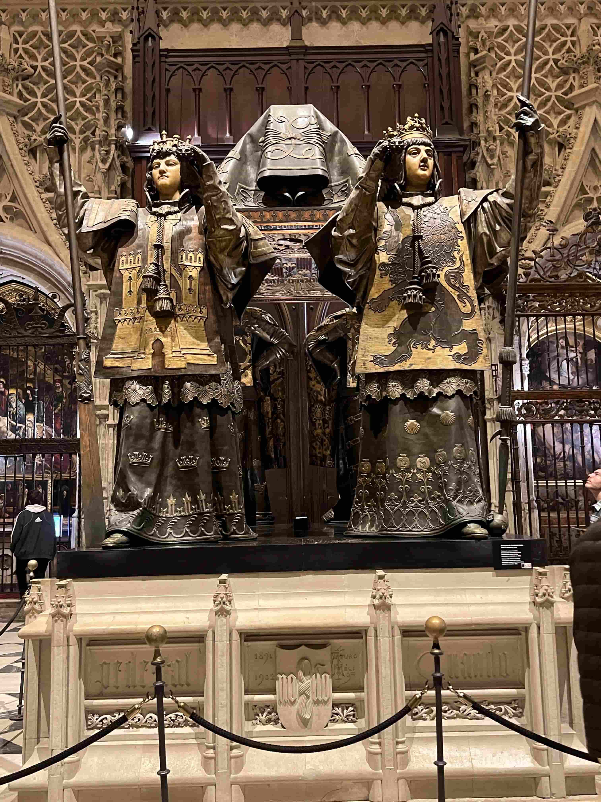

Seville Cathedral is the world's largest gothic cathedral and one of the city's most visited sights. I'm not religious. That's probably not the first thing you'd expect to hear from someone who has guided hundreds of people through one of the world's most beautiful cathedrals. But that's exactly where my story begins.
The day I saw the cathedral for the first time — for real
Of course I'd been inside the cathedral before. You don't live in Seville for years without setting foot in it. But the day I went in to start studying it as a licensed guide — that was something else. It was like seeing it for the very first time.
I remember it very well. I walked in through one of the great doors, and I stopped. Just stopped. The enormous space opened up in front of me — the dizzying height, the muted light filtering through the gothic windows, the scents, the sounds, the stillness in the middle of it all. And I thought: where on earth do I even begin?
«It's so big, so impressive, with so many chapels, so much height, so much history and so many architectural styles — I didn't know where to start. And it felt overwhelming in the very best way.»

The world's largest gothic cathedral — and what that actually means
Seville Cathedral isn't just big. It's the largest gothic cathedral in the world and the third-largest church overall — after St. Peter's Basilica in Rome and St. Paul's in London. But size isn't what impresses most once you're inside. It's the details. Every single chapel is a work of art in itself. The paintings by Murillo and Zurbarán. The Giralda tower rising from what was once an Islamic minaret. The tomb of Christopher Columbus, carried by four kings.
In 1401 it was decided the cathedral should be built — on the ruins of the great Almohad mosque. Construction began in 1436, and took over a hundred years to complete. Legend has it the canons said to one another: "Let us build a church so large that those who see it finished will think we were mad." They weren't mad. They were right.
Giralda — the tower with two lives
The Giralda tower is one of my favourite things to talk about when I guide. It was built as a minaret in 1184 by the Moorish Almohad rulers — and is one of the most beautiful examples of Islamic architecture in Spain. When the Christians took Seville in 1248, they decided to keep it. Instead of stairs, it has ramps inside — so the muezzin could ride up on horseback to call to prayer. Later they added a Renaissance belfry on top with church bells. Two religions, one tower, eight hundred years of history.
Not just for tourists — the cathedral lives
What makes Seville Cathedral more than a museum is that it's still in full use. Mass is held daily in the side chapels. Sevillians come in not as tourists but as a natural part of their everyday lives — to light a candle, sit quietly for a moment, or take part in one of the many festivities tied to the cathedral through the church year.
During Semana Santa, the cathedral is the very heart of it all. The processions start and end here. The whole city gathers. And even though I'm not religious, I can't help but feel something standing there in the crowd, watching the first procession figure round the corner in the dark — with lit candles and the heavy sound of drums in the streets.
«The cathedral isn't a museum you visit and leave. It's a living part of Seville — open to everyone, all year round, exactly as it has been for over six hundred years.»
What I always tell my groups
I've been guiding in Seville for around five years, and the cathedral is always a highlight. A tour here usually takes an hour. I always start by asking people to do one thing: stop in the entrance and look up. Let the scale sink in. Because that's where the magic begins — the moment you realise human hands actually managed to build this, without modern technology, stone by stone across generations.

- The world's largest gothic cathedral and UNESCO World Heritage Site
- The cathedral and the Giralda tower are visited on the same entrance ticket
- Construction began in 1436 and was completed in 1507
- The Giralda tower was originally built as an Islamic minaret in 1184
- Columbus's tomb is located inside the cathedral
- Open daily — free entry for Mass
- The ticket gives free entry to the Church of El Salvador on the same day
- Best time to visit: from 2–3pm and into the afternoon
Frequently asked questions
From 2 to 3pm and into the afternoon, when tourists are having lunch, the cathedral is quieter and more pleasant to experience.
It's the world's largest gothic cathedral and the world's third-largest church, after St. Peter's Basilica in Rome and St. Paul's Cathedral in London.
The Giralda is the cathedral's tower, originally built as an Islamic minaret in 1184 under Almohad rule, and preserved by the Christians after the conquest of Seville in 1248.